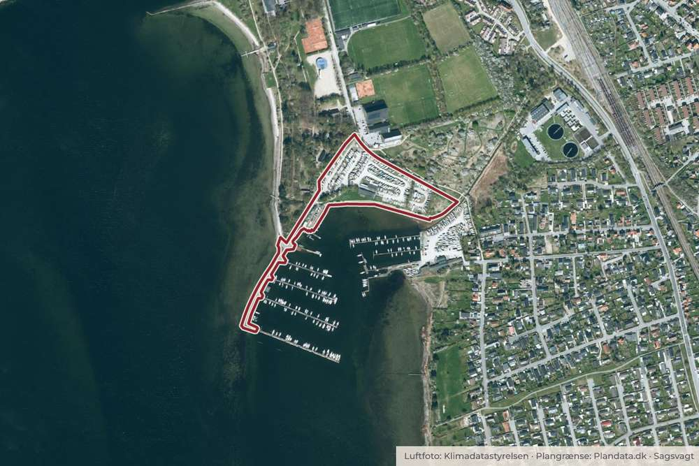

På dagsordenen 24. november, Plan og Udvikling, Frederikssund
Endelig vedtagelse af lokalplan 173 for Maritimt Center ved Kalvøvej i Frederikssund

Kort: © OpenStreetMap-bidragydere. Plangrænse: Plandata.dk, Frederikssund Kommune.

Kort fortalt
- Forslaget
- Godkende Lokalplan 173 endeligt med de af administrationen foreslåede ændringer
- Hvem
- Plan og Udvikling, Frederikssund Kommune
- Hvornår
- Tirsdag 24. november 2026
- Status
- På dagsordenen. Sagen behandles på mødet.
Er noget forkert her? Skriv til os
Hvad kan du gøre?
- Skriv til politikerne
- Udvalgets møder er lukkede, men du kan skrive til medlemmerne før mødet tirsdag 24. november 2026. Du finder dem på frederikssund.dk.
Læs hele sagen Kommunens egen tekst
Indstilling
Administrationen indstiller til Plan og Udvikling, at:
• Godkende Lokalplan 173 endeligt med de af administrationen foreslåede ændringer
Sagsfremstilling
Lokalplanens indhold
Lokalplanen har til formål at muliggøre opførelse af nye, moderne lystbådehavnsfaciliteter og nye faciliterer til kommunens maritime foreninger, et såkaldt maritimt center. Formålet med projektet er, at der skal åbnes for faciliteter til en bredere vifte af de fritidsaktiviteter, der knytter sig til Roskilde Fjord og at offentligheden inviteres tættere på fjorden.
Lokalplanen sikrer, at området er offentligt tilgængeligt for alle og dermed ikke kun er til gavn for kommunens maritime foreninger, men også for kommunens øvrige borgere.
Lokalplanen har været fremlagt i offentlig høring i perioden fra 20. august til 16. oktober 2026. I høringsperioden er der modtaget 6 høringssvar.
Bemærkningerne/høringssvarene til lokalplanforslaget er i hovedtræk:
• Trafik og parkering: Bekymring for trængsel og manglende parkeringspladser.
• Kommunens rolle som bygherre og myndighed: Bekymring for dobbeltrolle.
• Lokalplanens geografiske afgrænsning: Ønske om planlægning for et større område.
• Placering af affaldshåndtering. Ønske om fastholdelse af eksisterende placering af affaldshåndtering.
• Udformningen af vejen Vænget: Behov for tung trafik.
• Vejbelægning på forlængelsen af Kalvøvej: Ønske om asfalt i stedet for grusbelægning.
• Muligheden for opsætning af containere i lokalplanområdet: Ønske om flere end lokalplanen tillader.
• Kystbeskyttelse ifm. projektet: Spørgsmål til kystbeskyttelsestilladelse.
Kommunens svar på bemærkningerne:
• Lokalplanen for maritimt center skal ikke løse parkeringsbehovet for omkringliggende områder og funktioner.
• Der er ingen interessekonflikt indbygget i det forhold, at kommunen både er bygherre og myndighed. Denne konstellation gør sig gældende i alle 98 kommuner.
• Der er ikke planer om ændringer i de områder, der grænser op til lokalplanområdet, hvorfor de ikke er medtaget i lokalplanafgrænsningen.
• Taget til efterretning. Der muliggøres affaldshåndtering tættere på molen og bådene.
• Vejen Vænget kan håndtere tung trafik med de bestemmelser, der er fastsat for vejen i lokalplanforslaget.
• Grusbelægning fastholdes af æstetiske hensyn.
• Taget til efterretning. Der tillades op til 5 containere, i stedet for 3 som foreskrevet i lokalplanforslaget.
• Det er helt normalt at der er tilladelser, der først indhentes efter lokalplanens vedtagelse.
Høringssvarene giver anledning til at administrationen anbefaler følgende ændringer i lokalplanen:
• Mulighed for langtidsparkering af erhvervskøretøjer til havedrift
• Mulighed for affaldshåndtering flere steder inden for lokalplanområdet
• Mulighed for få parkeringspladser for enden af Vænget
• Mulighed for op til 5 containere
• Tilføjelse i afsnittet beliggenhed i redegørelsesdelen med forklaring af forskellen på vikingespil og vikingeboplads
Samlet set har høringen givet anledning til tekniske præciseringer og suppleringer i lokalplanforslaget, men ikke større ændringer. Der er redegjort for resultatet af den offentlige høring i hvidbogen.
Administrationen har i forbindelse med behandlingen af høringssvarene tilpasset lokalplanen med de ændringer, der er beskrevet i hvidbogen. Lokalplan 173 med ændringerne indarbejdet, høringssvar og hvidbogen er vedlagt dagsordenen som bilag.
Inddragelse
Lokalplanforslaget med tilhørende miljøvurdering har været i 8 ugers offentlig høring.
I udarbejdelse af visionsprojektet, som lokalplanen muliggør, har en følgegruppe bestående af repræsentanter fra Frederikssund Lystbådehavn A.M.B.A., Frederikssund Sejlklub, Frederikssund Roklub, Frederikssund ungdomsskole, Det Danske Spejderkorps Ege Division været løbende inddraget i projektudviklingen. Både følgegruppen og Lokale og Anlægsfonden har løbende givet deres input til projektet.
Økonomi
Nærværende sag har ingen bevillingsmæssige konsekvenser.
Bilag
Kilde: Frederikssund Kommune, Plan og Udvikling, dagsorden fra mødet tirsdag 24. november 2026, punkt 80. Læs den originale sag hos kommunen.